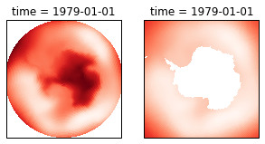
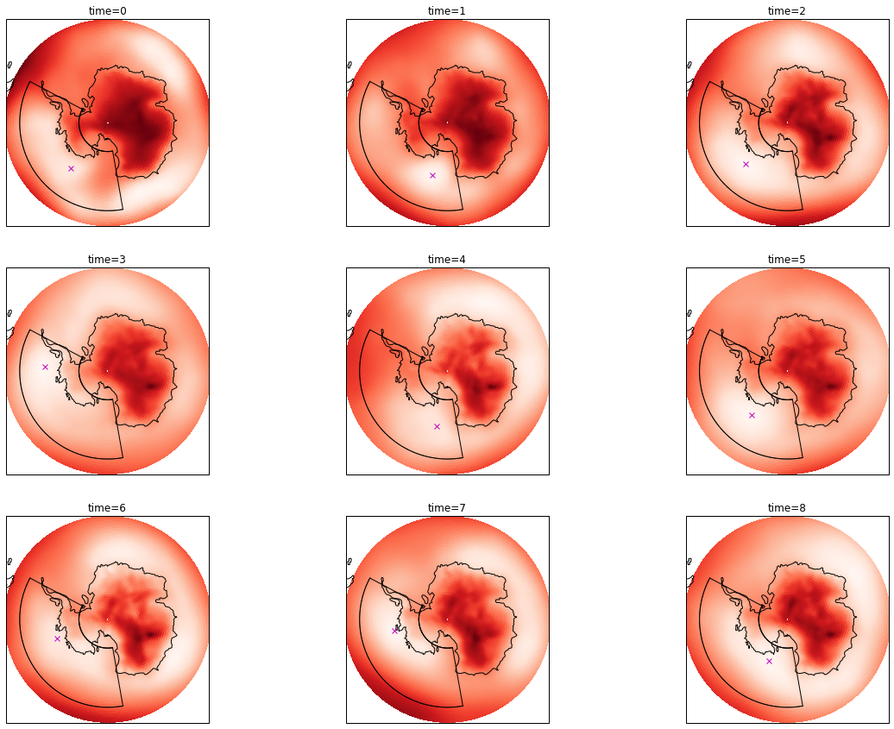

This work is a continuation of my 2013 and 2016 papers as described here
import xarray as xr
import numpy as np
import pandas as pd
import matplotlib.pyplot as plt
import cartopy.crs as ccrs
from skimage.feature import peak_local_maxRead in gridded monthly mean data for period 1979-2018
ds = xr.open_dataset('~/DATA/ERAI/erai_Surface_MonthlyMeansFromDaily.nc')
mask = xr.open_dataset('~/DATA/ERAI/erai_invariant.nc').lsm.squeeze()da = ds.mslApply land-sea mask
da_mask = da.where(mask == 0)
da_mask.mean().values, da.mean().values # these are different, great!(array(64511.23828125), array(42718.0625))
da = da.sel(latitude=slice(-55,-90))plt.figure(figsize=(5,5))
ax1 = plt.subplot( 121, projection=ccrs.Stereographic(central_longitude=0., central_latitude=-90.) )
ax1.set_extent([-180,180,-90,-55], ccrs.PlateCarree())
da.isel(time=0).plot.pcolormesh( 'longitude', 'latitude', cmap='Reds',
transform=ccrs.PlateCarree(), add_colorbar=False )
ax2 = plt.subplot( 122, projection=ccrs.Stereographic(central_longitude=0., central_latitude=-90.) )
ax2.set_extent([-180,180,-90,-55], ccrs.PlateCarree())
da_mask.isel(time=0).plot.pcolormesh( 'longitude', 'latitude', cmap='Reds',
transform=ccrs.PlateCarree(), add_colorbar=False )
Definitions to identify areas of low pressure
def get_lows(da, threshold=None):
invert_data = (da*-1.).values # search for peaks rather than minima
if threshold is None:
threshold_abs = invert_data.mean()
else:
threshold_abs = threshold * -1 # define threshold cut-off for peaks (inverted lows)
minima_yx = peak_local_max(invert_data, # input data
min_distance=4, # peaks are separated by at least min_distance
num_peaks=6, # maximum number of peaks
exclude_border=True, # excludes peaks from within min_distance - pixels of the border
threshold_abs=threshold_abs # minimum intensity of peaks
)
return minima_yx
def sector_mean(da, dict):
a = da.sel( latitude=slice(asl_region['north'],asl_region['south']),
longitude=slice(asl_region['west'],asl_region['east']) ).mean()
return a
def get_asl(da, region, mask):
'''
da for one point in time (with lats x lons)
'''
lons, lats = da.longitude.values, da.latitude.values
threshold = da.sel( latitude=slice(region['north'], region['south']),
longitude=slice(region['west'], region['east']) ).mean().values
time_str = str(da.time.values)
sec_pres = sector_mean(da.where(mask == 0), region).values
# fill land in with highest value to limit lows being found here
da_max = da.max().values
da = da.where(mask == 0).fillna(da_max)
### get lows for entire domain
minima_yx = get_lows(da, threshold)
minima_lat, minima_lon, pressure = [], [], []
for minima in minima_yx:
minima_lat.append(lats[minima[0]])
minima_lon.append(lons[minima[1]])
pressure.append(da.values[minima[0],minima[1]])
df = pd.DataFrame()
df['lat'] = minima_lat
df['lon'] = minima_lon
df['pressure'] = pressure
df['ASL_Sector_Pres'] = sec_pres
df['time'] = time_str
### select only those points within ASL box
asl_df = df[(df['lon'] > region['west']) &
(df['lon'] < region['east']) &
(df['lat'] > region['south']) &
(df['lat'] < region['north']) ]
### For each time, get the row with the lowest minima_number
asl_df = asl_df.loc[asl_df.groupby('time')['pressure'].idxmin()]
return asl_dfDefine area we are interested in
asl_region = {'west':170., 'east':298., 'south':-80., 'north':-60.}Loop through all times and identify lows
record these data in a Pandas DataFrame
ntime = da.time.shape[0]
all_lows_df = pd.DataFrame()
asl_df = pd.DataFrame()
for t in range(0,ntime):
da_t = da.isel(time=t) / 100.
asl_df = pd.concat([asl_df, get_asl(da_t, asl_region, mask)]).reset_index(drop=True)Show the first 7 rows
asl_df.iloc[0:7]| lat | lon | pressure | ASL_Sector_Pres | time | |
|---|---|---|---|---|---|
| 0 | -69.75 | 219.00 | 982.376343 | 986.091736 | 1979-01-01T00:00:00.000000000 |
| 1 | -71.25 | 196.50 | 973.704346 | 982.958923 | 1979-02-01T00:00:00.000000000 |
| 2 | -69.75 | 225.00 | 972.301636 | 980.515076 | 1979-03-01T00:00:00.000000000 |
| 3 | -68.25 | 273.75 | 967.706482 | 979.388428 | 1979-04-01T00:00:00.000000000 |
| 4 | -70.50 | 191.25 | 977.467529 | 987.170654 | 1979-05-01T00:00:00.000000000 |
| 5 | -70.50 | 219.00 | 966.901245 | 977.857605 | 1979-06-01T00:00:00.000000000 |
| 6 | -71.25 | 249.75 | 972.692871 | 980.135132 | 1979-07-01T00:00:00.000000000 |
Plotting: location of minimas in pressure field
def draw_regional_box( region, transform=None ):
'''
Draw box around a region on a map
region is a dictionary with west,east,south,north
'''
if transform == None:
transform = ccrs.PlateCarree()
plt.plot([region['west'], region['west']], [region['south'],region['north']],
'k-', transform=transform, linewidth=1)
plt.plot([region['east'], region['east']], [region['south'],region['north']],
'k-', transform=transform, linewidth=1)
for i in range( np.int(region['west']),np.int(region['east']) ):
plt.plot([i,i+1], [region['south'],region['south']], 'k-', transform=transform, linewidth=1)
plt.plot([i,i+1], [region['north'],region['north']], 'k-', transform=transform, linewidth=1)plt.figure(figsize=(20,15))
for i in range(0,9):
da_2D = da.isel(time=i)
ax = plt.subplot( 3,3,i+1,
projection=ccrs.Stereographic(central_longitude=0.,
central_latitude=-90.) )
ax.set_extent([-180,180,-90,-55], ccrs.PlateCarree())
result = da_2D.plot.pcolormesh( 'longitude', 'latitude', cmap='Reds',
transform=ccrs.PlateCarree(),
add_colorbar=False )
ax.coastlines(resolution='110m')
ax.set_title('time='+str(i))
### mark ASL
df2 = asl_df[ asl_df['time'] == str(da_2D.time.values)]
plt.plot(df2['lon'], df2['lat'], 'mx', transform=ccrs.PlateCarree() )
draw_regional_box(asl_region)
print('')